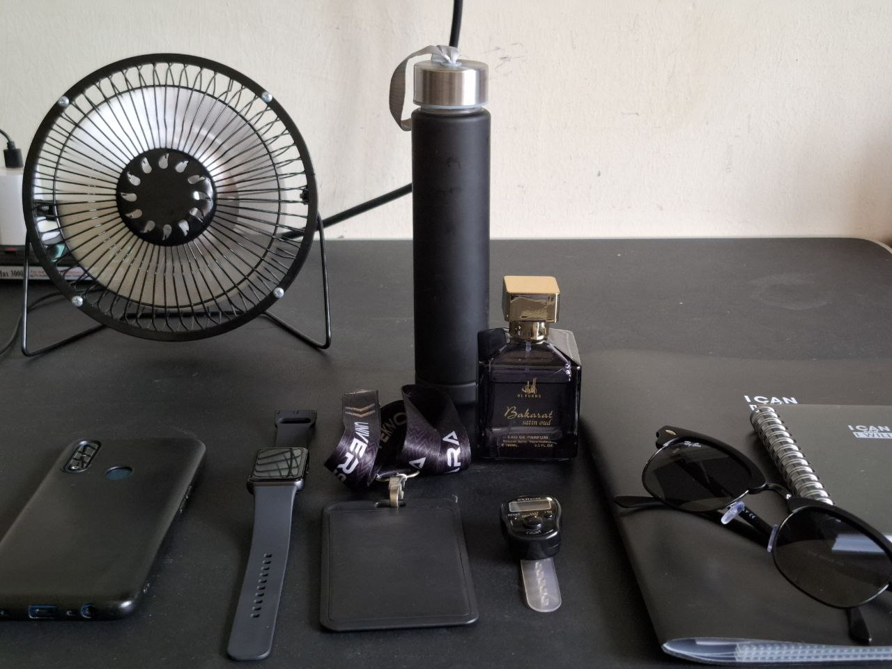
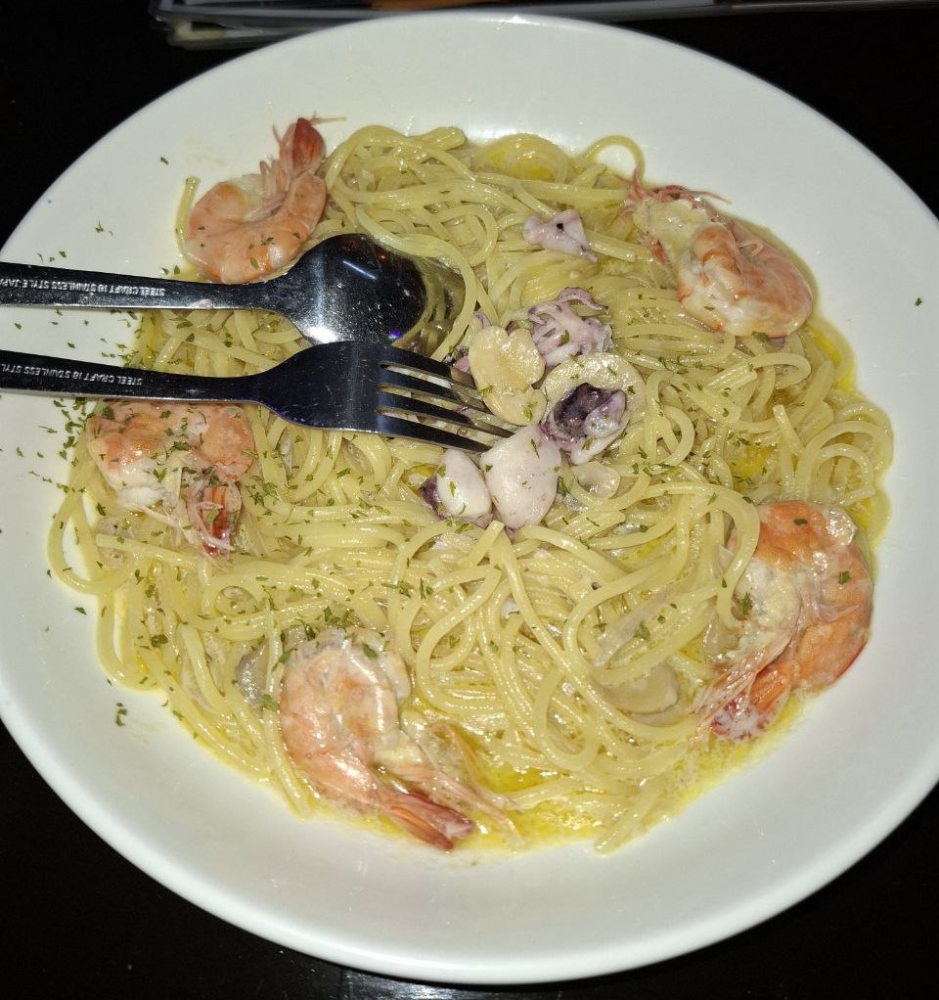

1. Colour
Black
Before this, my favorite color was green. But since the PKP I have changed the color of my life to BLACK. I love black. Black gives me a lot of benefits.
- Black makes someone look simple but elegant.
- Black is sunnah for Muslim women.
- Black is closed, safe, and doesn't attract attention.
- Black makes me more confident.
- Black helps me save more. For example, if I buy a purple shirt, then I must buy a headscarf and pants that match the shirt. So, more costs are used for expenses.
- Black simplifies and saves time. For example, it is easy for me to choose what to wear every day because my clothes are all black.
Even most of all my things are also in black. So it's nice for me because I'm a type of woman who doesn't like to think too much about trivial things.
2. Figure
Saidatina Fatimah binti Muhammad SAW
Saidatina Fatimah Az-Zahra is the Islamic figure that I admire the most. I make her a life guide. One of the things I like most about Saidatina Fatimah is her ascetic nature.
Saidatina Fatimah binti Muhammad is known for her extraordinary asceticism. Asceticism, in the context of Islam, means living a simple life and not being tied to worldly pleasures, as well as focusing on the afterlife. Here are some aspects of the ascetic nature of Saidatina Fatimah:
Simplicity in Everyday Life:
Fatimah lived a very simple life even though she was the daughter of the Prophet Muhammad SAW and the wife of Ali bin Abi Talib, who was one of the Prophet's closest friends. Her home is simple and she does the household chores herself without the help of servants.
Sacrifice for Family:
Fatimah often prioritizes the interests of her family above her personal interests. She is willing to work hard to help her husband, including taking care of the house, grinding wheat, and taking care of their children with love.
Satisfaction with What You Have:
Fatimah is always grateful for what she has, despite her lack. When Prophet Muhammad SAW offered help, Fatimah preferred to remain simple and grateful for what God had given.
Philanthropy and Caring for Others:
Despite living a simple life, Fatimah is known to be very generous and always ready to help those in need. She often gave food and help to the poor, even though her own family was in need.
Priority in the Hereafter:
Fatimah always prioritizes the afterlife over the worldly life. She often worships, prays, and reads the Qur'an, showing how much she values a relationship with God compared to worldly pleasures.
Perseverance in the Face of Adversity:
Fatimah's life was full of various trials and difficulties, but she was always patient and steadfast in facing them. The steadfastness of her heart in living a life of asceticism is a real example of strong faith and trust in God.
Advice and Education:
Fatimah often gives advice to other Muslim women about the importance of asceticism and keeping modesty. She taught that true happiness lies in obedience to God and not in worldly luxury.
The ascetic nature of Saidatina Fatimah binti Muhammad not only teaches the simplicity of life but also shows how to live life with full piety and devotion to God. Her life became an example for many people in finding happiness and spiritual satisfaction in the middle of the mortal life of the world.
3. Food
Spaghetti
Spaghetti is one of my favorite foods. Among the spaghetti I like the most is spaghetti Aglio Olio made by my mother. For me, there is nothing better than my mother's cooking. Also, I love spaghetti Carbonara. It's creamy and delicious. And actually, I love food, so there are many more of my favorite foods, I just don't have a picture of them. Because I just want to eat, I don't have time to take pictures.